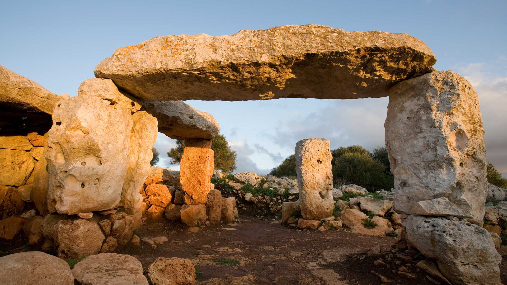

Informacion General
Poblado talayótico de gran extensión (5 ha), en el que prácticamente se documentan todas las fases de la prehistoria de Menorca hasta la reconquista cristiana protagonizada por el rey Alfonso III en 1287.
El poblado talayótico de la Torre de Galmés está ubicado en el municipio de Alaior, y es propiedad del Ministerio de Cultura, que lo adquirió a principios de los años setenta del siglo pasado. Actualmente conserva una extensión de unas 5 hectáreas que ocupan parte de un promontorio. Desde la cima se domina visualmente una enorme extensión de territorio y gran parte de la costa sur de Menorca .
Las primeras ocupaciones humanas de este lugar se remontan a la época del bronce (alrededor del 1700 a. C.), pero también se documentan las diferentes fases de la prehistoria de Menorca hasta prácticamente la reconquista cristiana del rey Alfonso III de Aragón 1287, momento en que se abandonó definitivamente. Cabe destacar los tres talayots (que datan de entre los años 1000 y 800 a. C.) que ocupan la cima del poblado, y también el santuario de mesa, construido con grandes losas de piedra alrededor del siglo IV a .
Las excavaciones que se llevaron a cabo en el interior pusieron al descubierto una estatuilla de bronce que representaba al semidios egipcio Imhotep. Este objeto llegó a la isla a través del comercio púnico.
El poblado destaca especialmente por contener un conjunto de casas del posttalayótico complejo e interesante (550-123 aC), que fue excavar de la mano de diferentes grupos de investigadores e instituciones. Las casas del posttalayótico se caracterizan por tener una planta circular con un patio central descubierto, que da paso a diferentes estancias que tuvieron usos diferentes (almacenes, zonas de descanso, talleres y cocinas).
Es destacable el interesante sistema de recogida y depuración de agua que se documenta en el límite del sur del poblado. Forma parte de la candidatura a patrimonio mundial que Menorca ha presentado en la Unesco.